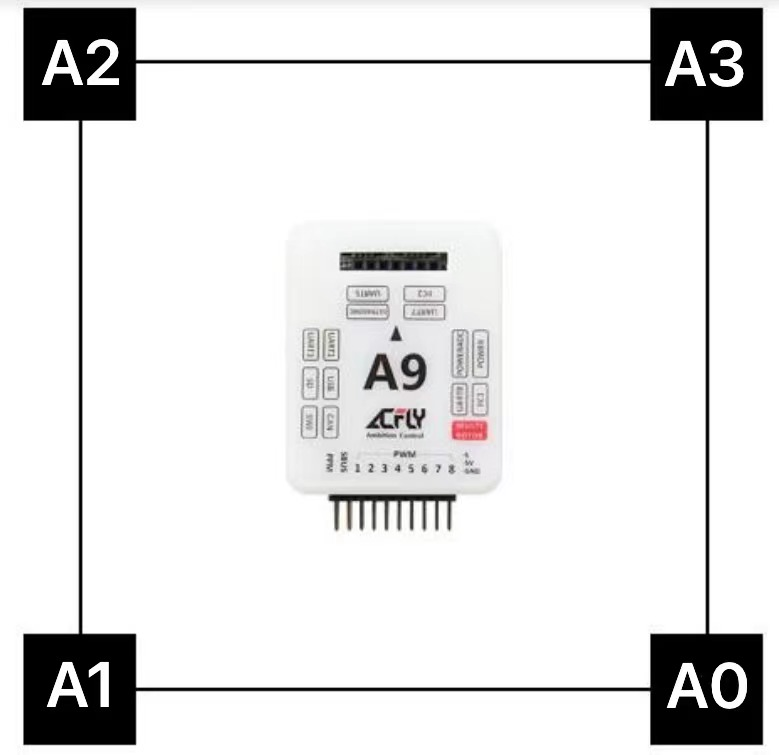

UWB的使用
Author: CGC
使用 Nooploop 的 LinkTrack 定位系统为 Acfly飞控提供定位
配置
我们使用的是4基站+1标签+1控制台的方案
参考的是官方用户手册中第13-14页的内容
- 按顺序0-3的id分别配置4个anchor
- 配置tag标签（飞控端） 通信协议选择tag_frame0
- 配置console控制台
摆放及上电方向
由于飞控的数据适配性，基站摆放位置和飞机上电位置需要受到限制\ （可能之后随着设备的更新会减轻这方面带来的影响，但是按我们目前的测试结果来看，还是非常建议按照已经测试好的方向进行初始化）
如下 
飞控通信协议设置
tag端通信协议
具体通信协议可以参考官方参考通信协议
在此处对飞控段使用的协议即 Tag 端作说明 即
tag端通信协议（接收）如下
 可知飞控可接收到数据有位置、姿态、精度等一系列数据
可知飞控可接收到数据有位置、姿态、精度等一系列数据
官方驱动代码
以下给出acfly官方发布的驱动代码
#include "drv_UWB_LinkTrack.hpp"
#include "Commulink.hpp"
#include "Basic.hpp"
#include "FreeRTOS.h"
#include "task.h"
#include "SensorsBackend.hpp"
#include "MeasurementSystem.hpp"
struct DriverInfo
{
uint32_t param;
Port port;
uint32_t sensor_key;
};
typedef struct
{
uint8_t id;
uint8_t role;
int pos_x:24; int pos_y:24; int pos_z:24;
int vel_x:24; int vel_y:24; int vel_z:24;
int dis_0:24; int dis_1:24; int dis_2:24; int dis_3:24; int dis_4:24; int dis_5:24; int dis_6:24; int dis_7:24;
float imuGyro[3];
float imuAcc[3];
uint8_t reserved1[12];
int16_t angle[3];
float q[4];
uint8_t reserved2[4];
uint32_t localTime;
uint32_t systemTime;
uint8_t reserved3[1];
uint8_t eop[3]; // 估计位置的精度
uint16_t voltage;
uint8_t reserved4[5];
}__PACKED _Uwb;
static const unsigned char packet_ID[2] = { 0x55 , 0x01 };
static void OpticalFlow_Server(void* pvParameters)
{
DriverInfo driver_info = *(DriverInfo*)pvParameters;
delete (DriverInfo*)pvParameters;
/*状态机*/
_Uwb Uwb;
unsigned char rc_counter = 0;
signed char sum = 0;
/*状态机*/
//等待初始化完成
while( get_Altitude_MSStatus() != MS_Ready )
os_delay(1);
//注册传感器
double angleOffset = 0;
if( driver_info.param>360 )
{
//记录初始偏航
Quaternion quat;
get_Attitude_quat(&quat);
angleOffset = quat.getYaw();
}
else
angleOffset = degree2rad((double)driver_info.param);
uint32_t sensor_key = PositionSlamSensorRegister( default_uwb_sensor_index , \
"UWB_LinkTrack" ,\
Position_Sensor_Type_RelativePositioning , \
Position_Sensor_DataType_s_xy , \
Position_Sensor_frame_SLAM , \
0.1, angleOffset, 100 );
int lastP = 0;
uint8_t pUCCounter = 0;
while(1)
{
uint8_t rdata;
if( driver_info.port.read( &rdata, 1, 2, 0.5 ) )
{
if( rc_counter < sizeof(packet_ID) )
{
//接收包头
if( rdata != packet_ID[ rc_counter ] )
{
rc_counter = 0;
sum = 0;
}
else
{
++rc_counter;
sum += rdata;
}
}
else if( rc_counter < sizeof(packet_ID) + sizeof(_Uwb) )
{ //接收数据
( (unsigned char*)&Uwb )[ rc_counter - sizeof(packet_ID) ] = rdata;
sum += rdata;
++rc_counter;
}
else
{ //校验
if( sum == rdata )
{
if( Uwb.eop[0]>200 || Uwb.eop[1]>200 ) // x y 精度大于2cm就失能
PositionSensorSetInavailable(default_uwb_sensor_index,driver_info.sensor_key);
else
{
vector3<double> pos, vel;
pos.x = Uwb.pos_x*0.1;
pos.y = Uwb.pos_y*0.1;
pos.z = Uwb.pos_z * 0.1;
vel.x = Uwb.vel_x*0.01;
vel.y = Uwb.vel_y*0.01;
vel.z = Uwb.vel_z * 0.01;
if( Uwb.eop[2] > 200 )
PositionSensorChangeDataType( default_uwb_sensor_index,sensor_key, Position_Sensor_DataType_s_xy );
else
PositionSensorChangeDataType( default_uwb_sensor_index,sensor_key, Position_Sensor_DataType_s_xyz );
double eop_xy = sqrtf( Uwb.eop[0]*Uwb.eop[0] + Uwb.eop[1]*Uwb.eop[1] );
if( Uwb.dis_0 != lastP )
{
lastP = Uwb.dis_0;
pUCCounter = 0;
}
else
{
if( pUCCounter < 255 )
++pUCCounter;
}
if( pUCCounter>100 )
PositionSensorSetInavailable( default_uwb_sensor_index,sensor_key );
else
PositionSensorUpdatePosition( default_uwb_sensor_index,sensor_key, pos, true, -1, eop_xy<100?100:eop_xy, Uwb.eop[2] );
}
}
rc_counter = 0;
sum = 0;
}
}
}
}
static bool UWB_LinkTrack_DriverInit( Port port, uint32_t param )
{
//波特率115200
port.SetBaudRate( 460800, 2, 2 );
//注册传感器
DriverInfo* driver_info = new DriverInfo;
driver_info->param = param;
driver_info->port = port;
xTaskCreate( OpticalFlow_Server, "OptFlowGL9306", 1024, (void*)driver_info, SysPriority_ExtSensor, NULL);
return true;
}
void init_drv_UWB_LinkTrack()
{
PortFunc_Register( 41, UWB_LinkTrack_DriverInit );
}
值得一提
在以上驱动代码中，值得一提的是
// z 精度大于2cm就不使用z轴数据
if( Uwb.eop[2] > 200 )
PositionSensorChangeDataType( default_uwb_sensor_index,sensor_key, Position_Sensor_DataType_s_xy );
else
PositionSensorChangeDataType( default_uwb_sensor_index,sensor_key, Position_Sensor_DataType_s_xyz );
及
if( Uwb.eop[0]>200 || Uwb.eop[1]>200 ) // x y 精度大于2cm就失能
PositionSensorSetInavailable(default_uwb_sensor_index,driver_info.sensor_key);
else
{
// ...
}
驱动内容为 超出2cm的精度许可范围，就将传感器失能\ UWB官方给出的数据是，x y 的精度在 10cm 之内 z 精度在 30cm 以内
- 关于z轴数据\ 这样一来其实可以反应我们看到的现象，首先是在只使用uwb作为外接传感器时，飞机完全定不住高（因为z精度完全无法满足2cm的要求），但是可能由于飞控中气压计等设备的存在，飞控有高度数据，室内定位可用，所以能够允许起飞，但在天上的高度数据，完全由飞控而来，所以现象是，没有定高可言。。。
注意事项及传感器使用建议
- 使用时发起自动标定的设备需要在线，比如我们使用控制台发起一键标定，则在使用时控制台必须要在线，否则数据会不可用
- 由于uwb的z轴精度较低，建议加上tfmini等作为定高传感器，通过测试，有uwb加上tfmini，定位效果较好
写在最后
- 通过这段时间的测试，我们发现至少在电赛赛制的背景下，用uwb可能会出现某些限制，比如场地不一定能够容纳摆放下基站，并且无法在换场地后进行标定，可能受到干扰等
- 对于电赛（赛场不允许携带笔记本及pc，上位机只支持x86，我们手上已有的板载电脑皆为arm，无法在现场进行标定）无法在换场地后进行标定的情况，可能考虑自行写接口，使用单片机或板载电脑进行标定，能够很大程度减少对位置场地的限制，我们尝试按照通信协议写了一份一键自动标定的程序，但还未在实际场地中进行测试。